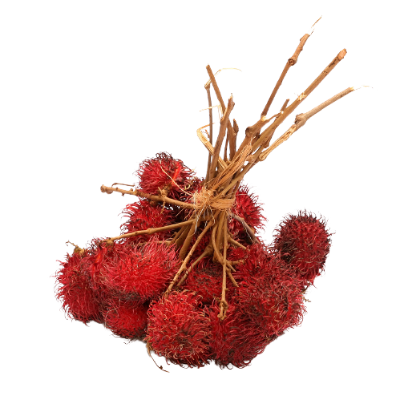

Rambutan ialah spesies pokok saka berbuah dalam keluarga Sapindaceae. Ia berasal dari kawasan tropika Asia Tenggara. Ia kini banyak ditanam di Asia Tenggara dan sedikit di Sri Lanka, New Guinea, Australia, Amerika dan Afrika.
